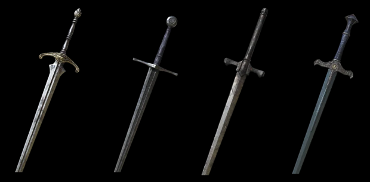

Items in Dark Souls will be much the same as previous Souls games. Categories for the wiki are separated for player convenience into: Key Items, Multiplayer Items, Consumables, Tools, Projectiles, Ammunition, Souls, Boss Souls & Upgrade Materials.
